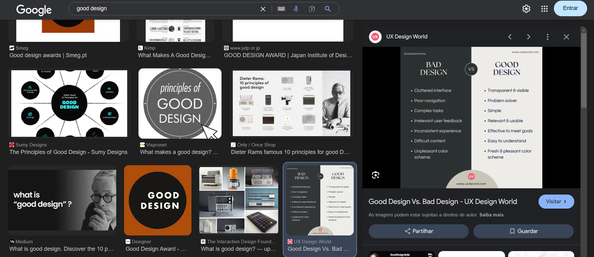
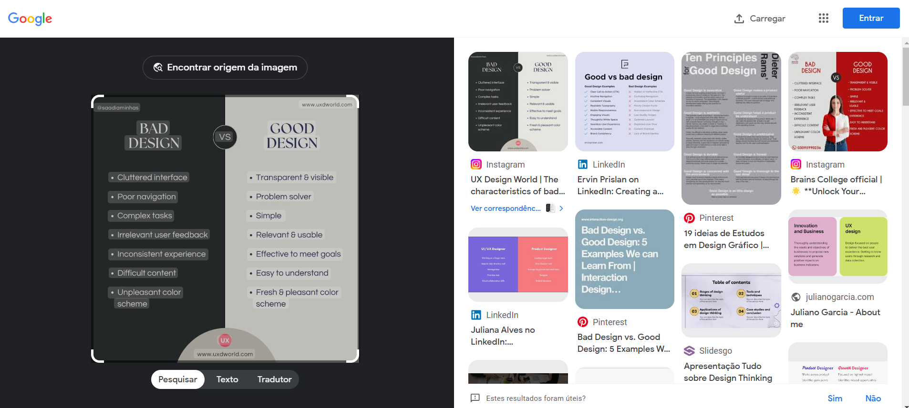
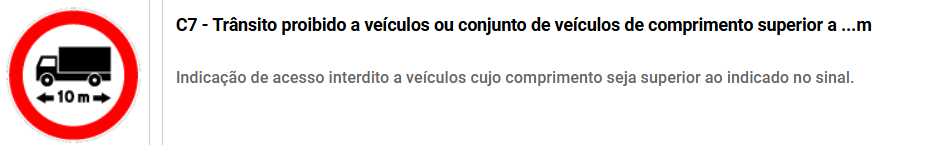
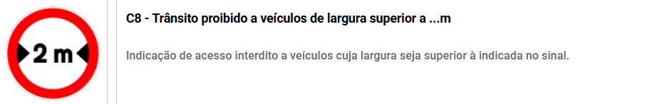
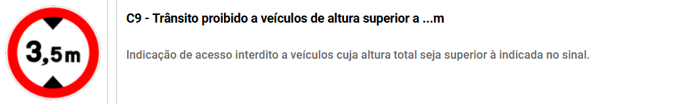

Individual Assignment: Simão Mota
The assignment instructions for this assignment can be found here
Good Design
Searching on Google has become an everyday activity for most of the people. Getting the information we need as fast as possible is a priority, and traditionally that is done by typing on the search bar. Searching for images is possible by selecting the "Images" options that will only display images that relate to the description Because the search is done via text it is often hard to describe accurately what image we are looking for. Google Lens is a tool that allows to search other images that are similar to a given one, by dragging the image to the search bar.
This is a good design because searching by dragging an image to the search bar is intuitive and fast. It provides a good way to search for similar images without mentioning the image's characteristics, to search for items used in the image (eg: clothing or accessories) It can even be used iteratively to get closer and closer to what the user wants every image.
Bad Design
The code road is a set of rules that define the behaviour of all drivers. In some cases, the driver needs to be updated on new restrictions to the general rules that apply in certain areas. For that signs can be used, and each carries a different meaning. The driver's attention is precious and so wasting time interpreting signs should be avoided. With that in mind, signs have different shapes and colors to make it easier for the user to identify their purpose.
However, there are some instances that can be misleading, as in the example present in the image above. This is a bad design example because the sign is using the pre established symbol of "goods vehicle" ("automóveis de mercadorias") to restrict the width of any vehicles regardless of their category. This creates an exceptional behaviour in which in this specific instance of the symbol should be interpreted differently. This issue is specially serious in the context of road safety where communicating to the user should be done in a fast and intuitive way. Too many exceptions like this one (there are several more in the road code) make the road code a bad interface.
 I can think that since restricting width and height of the vehicles was already associated with horizontal and vertical axis they would need an image of a vehicle sideways to indicate it was their length and not width. This could be avoided by using a symbol that would represent all vehicles sideways (without specifically enumerating each type). Alternatively the symbol of the vehicle could be omitted and only the information regarding how long it is would be present.